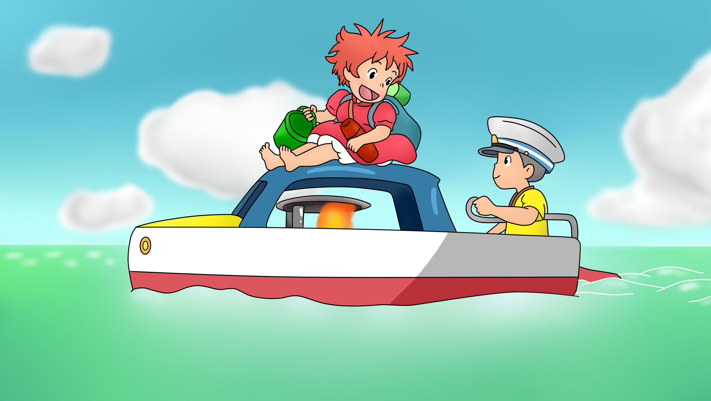

Info sobre Ponyo y el secreto de la sirenita
Gake no ue no Ponyo (崖の上のポニョ lit. Ponyo en el acantilado?), conocida en España como Ponyo en el acantilado, y en Hispanoamérica como Ponyo y el secreto de la sirenita, a veces llamada simplemente Ponyo, es una película de animación japonesa de 2008 producida por Studio Ghibli,3 escrita y dirigida por Hayao Miyazaki. Se trata de la octava producción dirigida por Miyazaki con Ghibli y la decimoséptima del estudio. Se basa vagamente en el cuento de hadas La sirenita, de Hans Christian Andersen. La cinta cuenta con las voces originales de Tomoko Yamaguchi, Kazushige Nagashima, Yūki Amami, George Tokoro, Yuria Nara, Hiroki Doi, Rumi Hiiragi, Akiko Yano, Kazuko Yoshiyuki y Tomoko Naraoka.
Argumento de la historia
Fujimoto, un hechicero y científico que alguna vez fue humano, vive bajo la superficie marina junto a su hija, Brunilda, y sus numerosas hermanas. Un día, mientras Fujimoto y sus hijas se encuentran en una excursión en su submarino, Brunilda se escabulle de la vista de su padre y se aleja nadando sobre una medusa. Después de haber sido arrastrada por una red de pesca, Brunilda termina atrapada en un frasco de vidrio. El frasco llega a la orilla de un pequeño pueblo pesquero, donde es encontrada y rescatada por un niño de cinco años llamado Sōsuke. El pequeño encuentra difícil sacarla del frasco, por lo que decide romperlo con una roca, accidentalmente cortándose su dedo. Brunilda lame su herida, la cual se cura casi instantáneamente para gran sorpresa de Sōsuke. Sōsuke cree que Brunilda simplemente es un pez y le toma un gran cariño, además de nombrarla "Ponyo" y prometerle que la protegerá por siempre. Mientras tanto, un desesperado Fujimoto busca frenéticamente a su hija desaparecida. Debido a sus experiencias desagradables del mundo humano, cree que Sōsuke la ha secuestrado y que está en grave peligro, por lo que Fujimoto convoca a espíritus del océano para recuperarla. Después de que los espíritus se llevan a Ponyo, un desconsolado Sōsuke vuelve a casa con su madre, Lisa, quien trata de animarlo.
De vuelta bajo el agua, Ponyo y Fujimoto tienen una discusión, durante la cual Ponyo se niega a dejar que su padre la llame por su nombre de nacimiento. Brunilda expresa sus deseos de ser llamada Ponyo y de convertirse en humana, debido a que quiere estar junto a Sōsuke. Utilizando su magia, Ponyo comienza a convertirse en un humana, un poder que le otorga la sangre humana que ingirió cuando lamió el dedo de Sōsuke. Su alarmado padre la obliga a volver a su verdadera forma con cierta dificultad y procede a convocar a la madre de Ponyo, la diosa Granmamare, por ayuda. A su vez, Ponyo, con la ayuda de sus hermanas, escapa nuevamente de su padre y en el caos utiliza su magia para convertirse completamente en humana. La enorme cantidad de magia que inadvertidamente liberó en el océano causa un desequilibrio en el mundo, resultando en la creación de un enorme tsunami que deja a todos los barcos (incluyendo uno tripulado por el padre de Sōsuke) varados en el mar. Gracias a la ayuda de sus hermanas
Granmamare arriba al submarino de Fujimoto. El padre de Sōsuke, Kōichi, quien la ve trasladarse por el océano, la reconoce como la diosa de la misericordia. Fujimoto advierte que la luna parece estar cayendo de su órbita y los satélites también están cayendo como estrellas fugaces, señales del peligroso desequilibrio de la naturaleza. Granmamare declara que si Sōsuke pasa una prueba, Ponyo podrá vivir como una humana y el orden del mundo será restaurado. Fujimoto, todavía preocupado, le recuerda que si Sōsuke falla en la prueba Ponyo se convertirá en espuma de mar. Al día siguiente, Sōsuke y Ponyo despiertan solo para encontrar que la mayor parte del terreno alrededor de la casa ha sido cubierto por el océano. Ya que es imposible que Lisa regrese a casa, los dos niños deciden ir y buscarla por su cuenta. Con su magia, Ponyo convierte el barco de juguete de Sōsuke a uno de tamaño real, el cual les permite navegar por el agua.